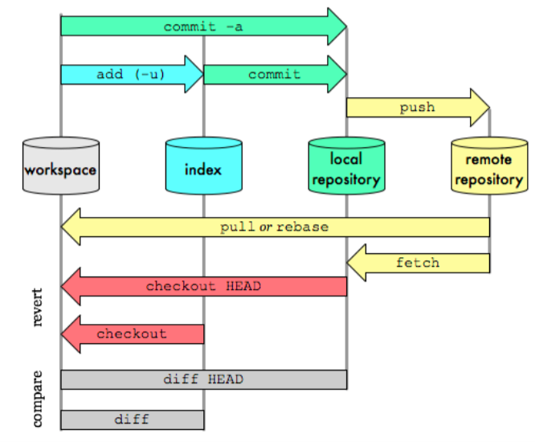

平时一直是用Intellij进行开发,git命令也不会用命令行去输入.导致有些命令都不太熟悉了,每次用到的时候都是google.
今天把平时用到的命令做个笔记记录一下.
git分布式仓库工作流程
这里有个图,非常形象的展示了本地仓库和远程仓库以及常用的一些命令的作用范围.
一图胜千言,图片摘自http://krishnaiitd.github.io/gitcommands/git-workflow/

设置 commit 的用户和邮箱
git config user.name "xx" #设置 commit 的用户
git config user.email "xx@xx.com" #设置 commit 的邮箱
git commit --amend --author "xxx <xxx@gmail.com>" #修改上次提交的用户信息
git config format.pretty oneline #显示历史记录时，每个提交的信息只显示一行
配置本地到github的免密
参考我之前写的 http://dmlcoding.com/2016/sshlogin/
远程仓库
添加远程仓库
git remote add origin git@server-name:path/repo-name.git #添加一个远程库
查看远程仓库
origin是远程仓库的别名,约定俗成的叫做original.
git remote #要查看远程库的信息
git remote -v #显示更详细的信息
推送分支
git push origin master #推送到远程master分支
抓取分支
git clone git@server-name:path/repo-name.git #克隆远程仓库到本地(能看到master分支)
git checkout -b dev origin/dev #创建远程origin的dev分支到本地，并命名为dev
git checkout origin/dev --track #与上面效果一样
git pull origin master #从远程分支进行更新
git fetch origin master #获取远程分支上的数据
抓取GitHub上某个pull request到本地
git fetch origin pull/ID/head:BRANCHNAME
git checkout BRANCHNAME
$ git branch --set-upstream branch-name origin/branch-name，可以建立起本地分支和远程分支的关联，之后可以直接git pull从远程抓取分支。
另外，git pull = git fetch + merge to local
删除远程分支
$ git push origin --delete bugfix
To https://github.com/wuchong/jacman
- [deleted] bugfix
# 或者直接push一个空分支
$ git push origin :bugfix
To https://github.com/wuchong/jacman
- [deleted] bugfix
更新远程分支信息
项目往前推进的过程中，远程仓库上经常会增加一些分支、删除一些分支。 所以有时需要与远程同步下分支信息。
git fetch -p
-p就是修剪的意思。它在fetch之后删除掉没有与远程分支对应的本地分支，并且同步一些远程新创建的分支和tag。
历史管理
查看历史
git log --pretty=oneline filename #一行显示
git log -p -2 #显示最近2次提交内容的差异
git show cb926e7 #查看某次修改
版本回退
git reset --hard HEAD^ #回退到上一个版本
git reset --hard cb926e7 #回退到具体某个版
git reflog #查看命令历史,常用于帮助找回丢失掉的commit
用HEAD表示当前版本，上一个版本就是HEAD，上上一个版本就是HEAD，HEAD~100就是上100个版本。
管理修改
git status #查看工作区、暂存区的状态
git checkout -- <file> #丢弃工作区上某个文件的修改
git reset HEAD <file> #丢弃暂存区上某个文件的修改，重新放回工作区
查看差异
git diff #查看未暂存的文件更新
git diff --cached #查看已暂存文件的更新
git diff HEAD -- readme.txt #查看工作区和版本库里面最新版本的区别
git diff <source_branch> <target_branch> #在合并改动之前，预览两个分支的差异
使用内建的图形化git：gitk，可以更方便清晰地查看差异。当然 Github 客户端也不错。
删除文件
git rm <file> #直接删除文件
git rm --cached <file> #删除文件暂存状态
储藏和恢复
git stash #储藏当前工作
git stash list #查看储藏的工作现场
git stash apply #恢复工作现场，stash内容并不删除
git stash pop #恢复工作现场，并删除stash内容
分支管理
创建分支
git branch develop #只创建分支
git checkout -b master develop #创建并切换到 develop 分支
合并分支
git checkout master #切换到主分支
git merge --no-ff develop #把 develop 合并到 master 分支，no-ff 选项的作用是保留原分支记录
git branch -d develop #删除 develop 分支
标签
显示标签
git tag #列出现有标签
git show <tagname> #显示标签信息
创建标签
git tag v0.1 #新建标签，默认位 HEAD
git tag v0.1 cb926e7 #对指定的 commit id 打标签
git tag -a v0.1 -m 'version 0.1 released' #新建带注释标签
操作标签
git checkout <tagname> #切换到标签
git push origin <tagname> #推送分支到源上
git push origin --tags #一次性推送全部尚未推送到远程的本地标签
git tag -d <tagname> #删除标签
git push origin :refs/tags/<tagname> #删除远程标签
Git 设置